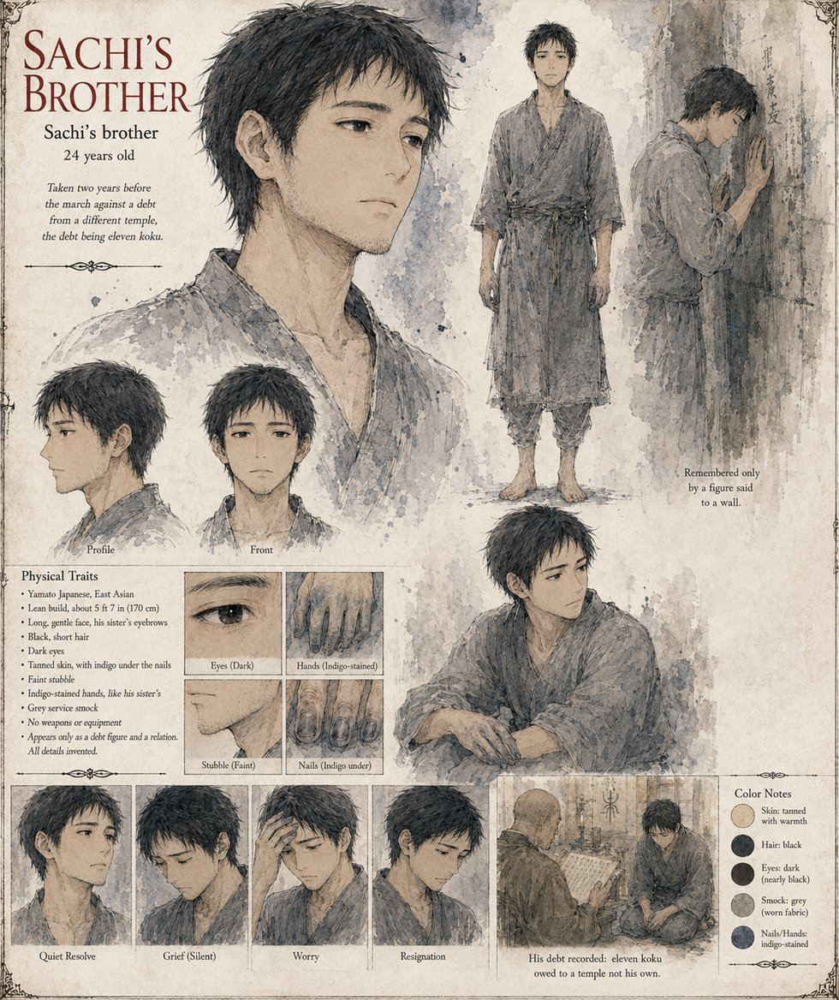

Sachi's Brother
Taken two years before the march · eleven koku owed to a different temple · remembered only by a figure said to a wall · 24 by his sheet
The brother of Sachi the dye-worker, taken two years before the march against a debt owed to a different temple entirely, the debt being eleven koku. Sachi has said that figure aloud to the walls of the dye-shed ever since, and in the market town she stands on a cart and reads it aloud from memory (Part Four, What the Stone Gave Isamu). It is the same eleven koku that recurs door to door in Kagetani, owed here to a different temple entirely.
He appears in the manuscript only as a debt figure and a relation, and the sheet says so itself: all details invented. The manuscript never gives Sachi’s gender; the pack makes Sachi a woman, which is why this page says sister. It draws him lean at about 5 ft 7 in, with a long gentle face and his sister’s eyebrows, short black hair, dark eyes, faint stubble, tanned skin with indigo under the nails and on both hands like hers, in a worn grey service smock, barefoot. Its panels are Quiet Resolve, Grief (silent), Worry and Resignation; its scenes show him standing full length, leaning his forehead and palm against a wall, captioned Remembered only by a figure said to a wall, and kneeling before a monk who reads from a ledger, captioned His debt recorded: eleven koku owed to a temple not his own.